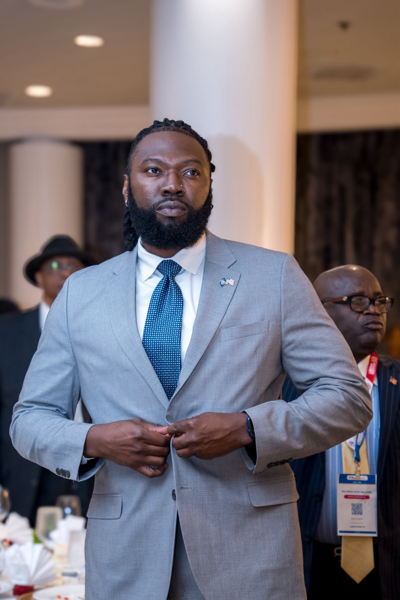
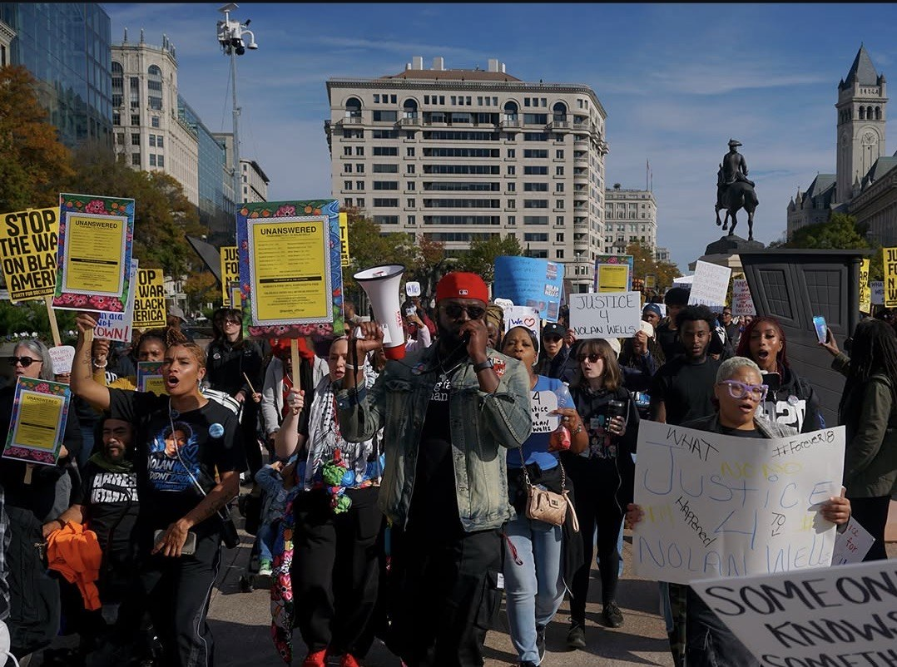
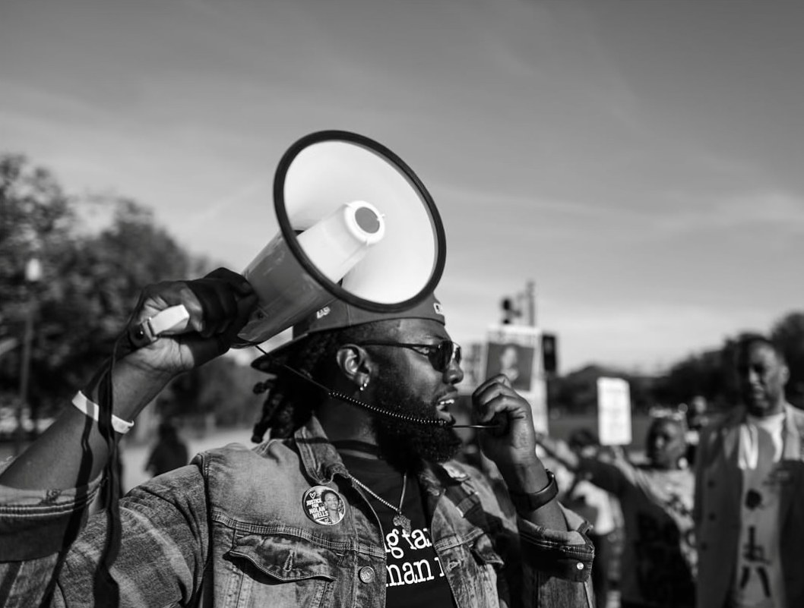

Bios, a photo and quick facts for stories, introductions and event programs. For interviews and requests, email hello@lawrencetotimeh.com with your outlet and deadline.
Lawrence Totimeh Jr., known as Agent Kodak, is a U.S. Army combat veteran, program coordinator and civic educator. He teaches everyday people how power works, how to get answers in writing, and how to hold the people they elect accountable. He holds an M.S. from Virginia State University and is a TEDx speaker.
Lawrence Totimeh Jr., connu sous le nom d'Agent Kodak, est un vétéran de combat de l'armée américaine, coordinateur de programmes et éducateur civique. Il apprend aux citoyens ordinaires comment fonctionne le pouvoir, comment obtenir des réponses par écrit et comment demander des comptes à leurs élus. Il est titulaire d'un master de Virginia State University et intervenant TEDx.

Free to use with stories about Lawrence and his work. Credit the official photo: Courtesy of Lawrence Totimeh Jr.

March for Nolan Xavier Wells ("One March. Fifty States."), Freedom Plaza, Washington, D.C., Nov. 1, 2026. Lead organizer: Tyler. Photo credit (required): @therealchancemeeting. Web size; for a full-size file, email hello@lawrencetotimeh.com.

Lawrence on the megaphone at the Justice for Nolan Wells march, Washington, D.C., Nov. 1, 2026. Photo credit (required): Bill Lee Photography, @billleephotography. Web size.
More from the Justice for Nolan Wells march, Washington, D.C., Nov. 1, 2026. Photo credit (required): @c.l.a.i.r.e.s.a.v.a.r.y on Instagram. Web size.
Use the white logo on dark backgrounds and the black logo on light ones. Use the all-white version on busy photos. Please don't stretch it, recolor it or add effects.
Lawrence Totimeh Jr., known online as Agent Kodak, is a Liberian American civic educator, social justice advocate and U.S. Army combat veteran who served in Iraq. After more than ten years as an educator, he now teaches civics to the people school skipped: how government actually works, who holds power, and how ordinary people can hold it accountable.
His lessons turn public records into plain, visual explainers. His campaign On the Record for Nolan asks every member of Congress one question in writing about the death of Nolan Xavier Wells: yes, no or silent. His free Know Your Public Servants tool lets anyone type in their address and save their elected officials to their phone.
Lawrence holds an M.S. from Virginia State University and has spoken at TEDxSinkor. He is based in the Washington, D.C. area. His message is simple: the power of the people is greater than the people in power.
Learn the law. Document. Vote. Follow up. Never harass. Every like, every repost, every comment helps educate our community.
Everything here is free and stays that way. If a lesson helped you, you can back the work directly.